Abstract
This paper describes mmRISC-2, a project in which Anthropic's AI coding agent Claude Code designed a 64-bit RISC-V CPU (RV64GC) that boots Linux on a Digilent Arty A7-100T FPGA board. Claude Code wrote the specifications, the RTL, the testbenches and the verification, the scripts and the documents in two languages. The author set the goals, chose among the proposals, and ran Vivado and the board.
Linux booted on the home-made CPU from the SD card to the BusyBox shell 12 days after the start, and 30 days after the start the project reached Rev.01: an L2 cache, a pipelined FPU, Zba / Zbb / Zbs / Zbc / Zicond / Zicboz, 3.025 CoreMark/MHz, and a 120-minute stress test passed. The paper covers how the work was done, the specification, the history, the rework and how verification improved, an evaluation of AI-driven design, and the role left to the human.
Setting the constraint "make only the CPU, reuse everything else" at the very beginning was one of the main reasons the project reached Linux so quickly.
The project started with the following request (translated from Japanese).
① The first request (early morning, 2026-09-13)
② 09-13 04:40, the instruction to start
③ 13:07 the same day, Linux booted on the standard Rocket → 14:31, on to replacing the CPU
The bases were compared first, and Linux was run on the standard configuration to make a reference before only the CPU was replaced. At that point there was not yet a single line of CPU RTL. Table 1 summarizes Claude Code's comparison of the bases.
Table 1 Comparison of the bases (a summary of Claude Code's answer)
| Base | Ease of replacing the CPU | Arty A7 support | Linux boot record | Decision |
|---|---|---|---|---|
| LiteX | ◎ Has a mechanism for swapping CPUs; existing CPUs serve as examples | ◎ Official (DDR3, Ethernet, SD) | ◎ OpenSBI and device tree included | Chosen |
| vivado-risc-v | △ Built around Rocket Chip | ◯ Less freedom in the SoC | ◯ Rocket + Linux | No |
| CVA6 SoC | △ SoC integration is not general | △ Little support | ◯ 64-bit Linux | No |
| Chipyard | △ Chisel / Scala centered | ― | ◯ | No |
The other obstacle was Vivado. Vivado runs only on x86 and cannot be installed on Ubuntu on an Apple Silicon Mac. Vivado 2025.1 did run on Windows 11 for Arm under Parallels, so the work folder was shared and only synthesis and programming were left to the author.
Table 2 What the author and Claude Code did
| The author | Claude Code |
|---|---|
| Set the goals, constraints and priorities | Wrote the specifications and recorded the design decisions (78) |
| Had options proposed and chose among them | Wrote all of the RTL (22,084 lines of SystemVerilog) |
| Provided the specification PDFs (Debug Spec, privileged spec and others) | Built and ran the testbenches, reference models and bug injection |
| Synthesized with Vivado and programmed the board | Integrated the CPU into LiteX; built OpenSBI, the device tree and the Linux side |
| Made the SD card, ran the board and passed back logs and numbers | Read the timing reports and board numbers, found causes and proposed next steps |
| Looked at the results and pointed out what was wrong | Wrote the documents (EN / JA), and committed and pushed to GitHub on its own |
Claude Code wrote the RTL, the testbenches and the documents. The author's input was about 350 instructions in Japanese, plus the results from the board.
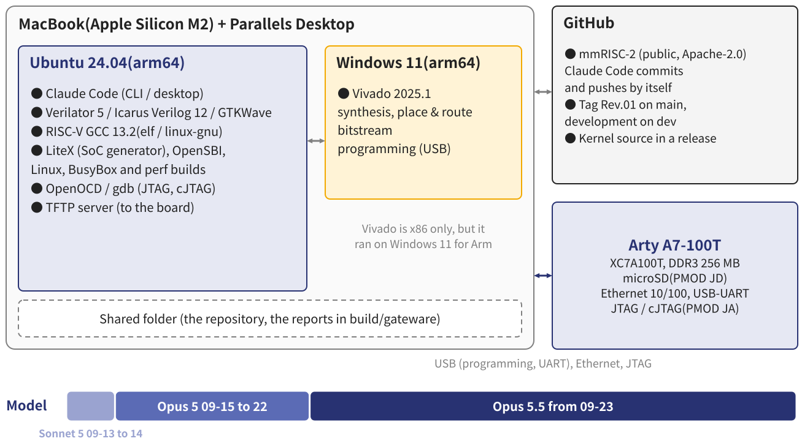
On Ubuntu (arm64), Claude Code ran the simulations, the software builds, and the documents and repository; only Vivado was run by the author on the Windows side. Claude Code read the Vivado reports through the shared folder. The model was Claude Sonnet 5 for the first two days (setting up LiteX with Rocket), Opus 5 from 09-15 when the work on the home-made CPU began, and Opus 5.5 from 09-23.
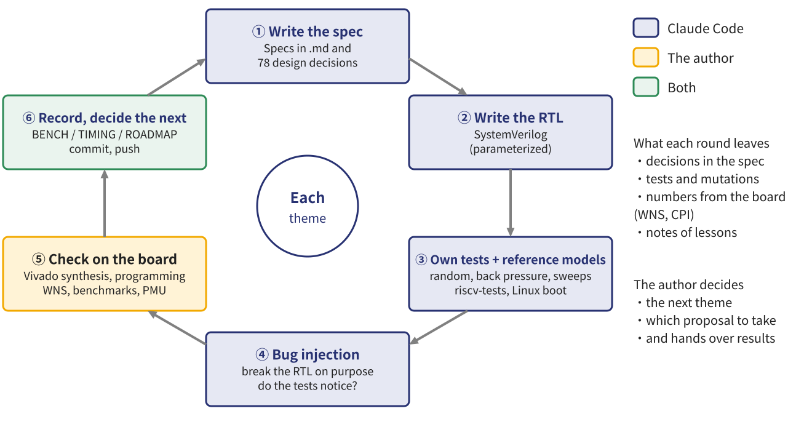
For each theme (for example, adding the L2, or not waiting for store misses) the same cycle was run: specification → RTL → own tests and reference models → bug injection to check how much the tests catch → check on the board by the author → record the results and decide the next theme. The board's results become the input of the next cycle.
| Item | Value |
|---|---|
| Period | 2026-09-13 to 10-12 (30 days) |
| Commits | 189 (git from 09-19) |
| Author's instructions | about 350 |
| RTL | 46 files, 22,084 lines |
| Verification | tests and scripts, 28,926 lines |
| Documents | EN 9,777 + JA 9,505 lines |
| Design decisions | 78 |
| Bug injections | 550, all detected |
| API calls | about 6,400 |
| Input tokens | about 2.9 billion (98 % cache) |
| Output tokens | about 7.6 million (incl. thinking) |
| Plan | Claude Pro |
The token counts are estimates summed from Claude Code's conversation logs. They do not include the session of the first request or the compaction of conversations. Most of the input is the conversation history read again from the cache at every call.
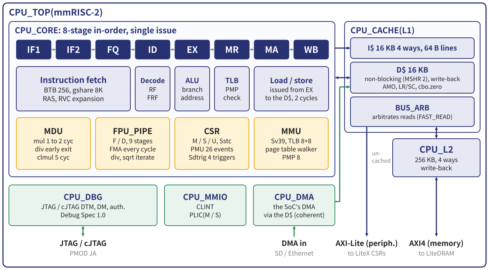
Table 3 Main features of the CPU
| Item | Specification |
|---|---|
| ISA | RV64IMAFDC + Zba / Zbb / Zbs / Zbc / Zicond / Zicboz, Zicsr, Zifencei, Zicntr, Zihpm, M / S / U |
| Pipeline | 8-stage in-order (IF1 IF2 FQ ID EX MR MA WB), forwarding from EX, MR and MA |
| Branch prediction | BTB 256, gshare (PHT 8192), return address stack 8; branches on a load's value resolved in MR |
| Multiply / divide | Multiply in 1 to 2 cycles, divide with early exit, carry-less multiply in 5 cycles |
| Floating point | F / D, a 9-stage pipeline issuing one operation (FMA) a cycle; divide and square root iterate |
| MMU and protection | Sv39, ITLB / DTLB of 8 entries each, hardware page table walker, PMP 8 |
| Caches | L1 I$ / D$ 16 KB each (4 ways, 64 B); the D$ is non-blocking and write-back; L2 256 KB |
| Interrupts, privilege | CLINT, PLIC (M / S), Sstc, privileged spec 1.12 |
| Debug | JTAG / cJTAG (Debug Spec 1.0), 4 triggers (Sdtrig), authentication |
| Performance counters | 4 counters, 26 events, Sscofpmf, Smcntrpmf (usable from Linux's perf) |
| FPGA | Arty A7-100T, 50 MHz, WNS +0.664 ns, LUT 74 %, slices 86 %, BRAM 108.5 / 135 |
Loads and stores are issued to the D$ from EX; a hit takes 2 cycles and one access flows every cycle. The SoC's DMA also goes through the D$, so the cache coherence Linux expects is kept in hardware. The external interfaces are AXI4 for memory, AXI-Lite for peripherals, a DMA input and JTAG / cJTAG. On top of what Linux needs, extensions for speed (Zba / Zbb / Zbc, Zicboz) and a PMU for measurement were added later.
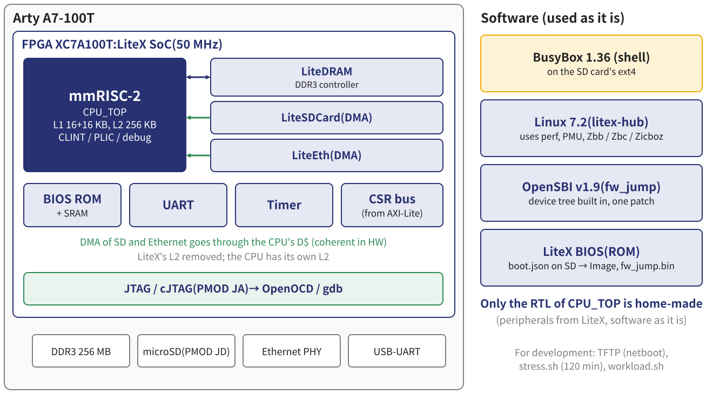
The CPU of the SoC generated by LiteX was replaced with mmRISC-2. At first the memory map matched the Rocket configuration byte for byte, and only the CPU node of the device tree was rewritten. Later LiteX's L2 was removed in favour of the CPU's own L2, the DMA was routed through the D$, and Ethernet was added. The software boots in the order LiteX BIOS → OpenSBI v1.9 → Linux 7.2 → BusyBox.
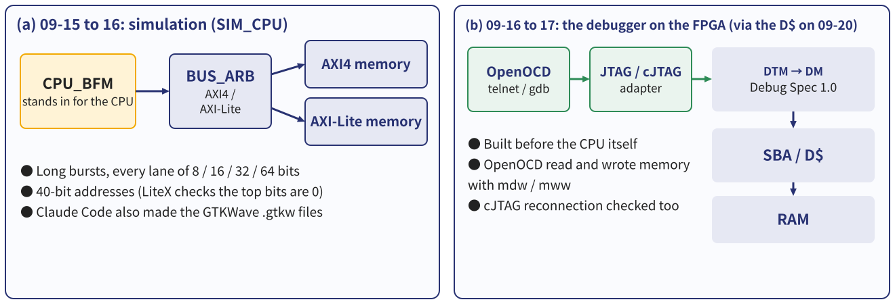
Before the CPU itself, the paths of the bus, the memory and the debugger were checked, so that when the CPU did not work it would be clear how much was already right. The debugger was implemented before the CPU from the official Debug Spec PDF given to Claude Code; on 09-17 OpenOCD read and wrote memory on the FPGA through it, and cJTAG reconnection was checked as well. The same debugger later put hardware breakpoints on the Linux kernel running on the board. From then on the rule was "write the testbench first": for the caches, the reference model and the random tests came before the RTL.
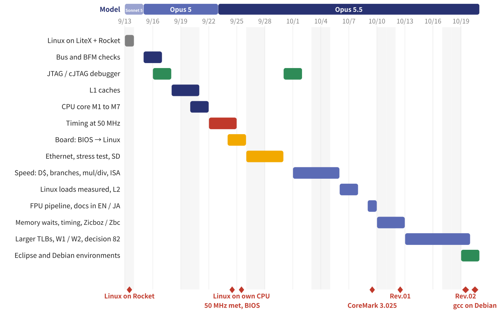
The CPU core, from the pipeline skeleton to the integration into LiteX, took the two days of 09-20 and 21, and timing took the three days from 09-22 to 24. The BIOS came up on the board on 09-24 and Linux on 09-25. In October the work turned to performance and measurement, and from 10-10 to 12 to the memory waits and the remaining timing paths.
Table 4 Main decisions and changes of the specification
| Date | Decision | Reason / result |
|---|---|---|
| 09-13 | LiteX as the base; Linux on the standard Rocket first | A reference where only the CPU has to be swapped (booted the same day) |
| 09-16 | AXI4 for memory, AXI-Lite for peripherals, 40-bit addresses | Usable in other SoCs; LiteX checks that the top bits are 0 |
| 09-18 | L1 like Rocket's (16 KB + 16 KB), parameterized | Verified over a sweep of 19 configurations |
| 09-23 | Stage MR added for 50 MHz (7 → 8 stages) | WNS −20.4 ns → 0.000 ns (09-24) |
| 09-24 | The SoC's DMA through the D$ | Hardware keeps the coherence the Linux SD driver relies on |
| 10-02 | Loads and stores issued from EX | CoreMark 1.895 → 2.211 /MHz |
| 10-06 | LiteX's L2 removed; an L2 of 256 KB inside the CPU | Kernel-heavy loads 1.2 to 1.7 times faster |
| 10-09 | FPU pipelined | One operation a cycle, and fewer resources |
| 10-11 | I$ prefetch built but switched off | 0 to 4 % slower on the board (section 5.2) |
| 10-12 | No second read on the bus; measure first | It would gain 0.26 %; a grant one cycle earlier (FAST_READ) instead |
The author made the final choices, but Claude Code proposed most of the options and their reasoning. In the later part, "measure before building" became the rule.
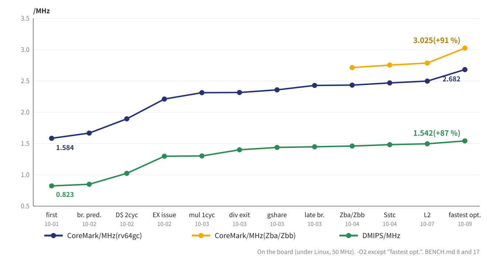
From 1.584 CoreMark/MHz in the first version (10-01), the steps were: D$ hits in 2 cycles, loads and stores issued from EX, 1-cycle multiply, gshare, branches on a load's value resolved in MR, Zba / Zbb, the L2 and finally the compiler options. CoreMark rose by 91 % and Dhrystone by 87 %.
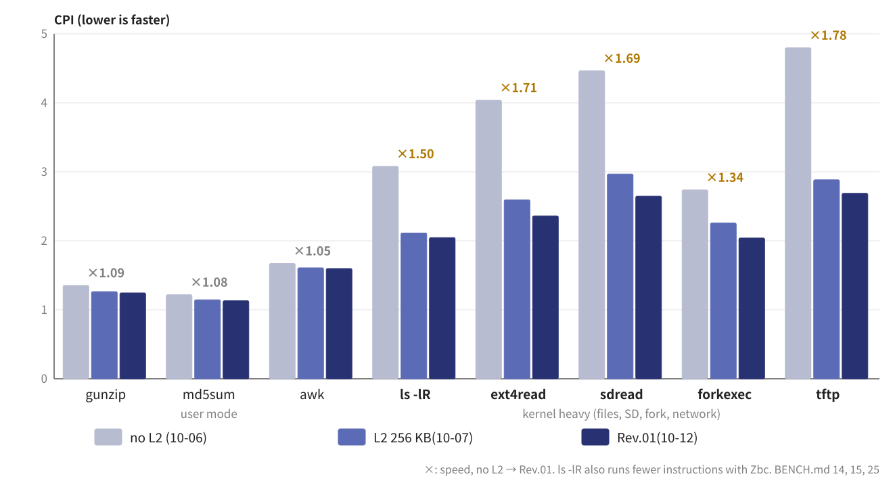
CoreMark fits in the caches, so eight real Linux loads were chosen and counted with the PMU (workload.sh). Kernel-heavy loads spent 50 to 70 % of their cycles waiting for the caches; the L2 made them 1.2 to 1.7 times faster. Not waiting for store misses, fetching before writing back a dirty victim, cbo.zero and the bus improvements then cut another 7 to 11 %. The breakdown by function (perf) also confirmed the faster CRC with Zbc.
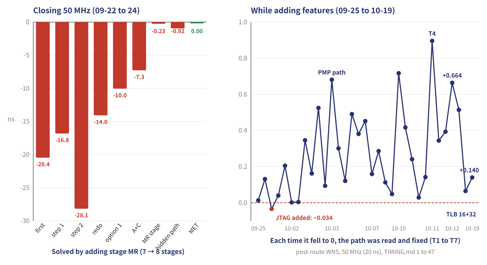
The first synthesis gave −20.4 ns (about 25 MHz). Judging the cause to be logic depth rather than routing congestion, the paths were read and cut one by one. Step 2 made things worse and was redone, and adding stage MR finally met 50 MHz on 09-24. After that, every new feature brought WNS back near 0, and each time the worst path was read and fixed (T1 to T7). Rev.01 closes at +0.664 ns.
Three cases where the AI went wrong, and what caught each of them.
On the first board run, the LiteX BIOS banner stopped part way. What got out were the 16 bytes of the UART's transmit FIFO: 2 for the newline \n\r, 4 for the bold escape ESC[1m and 10 visible characters. The CPU was running; what had stopped was the interrupts.
The next day a bug where instructions were not fetched again after a write of satp (the sequence that enables the MMU in S mode) was also found. Both were "paths first taken on the board".
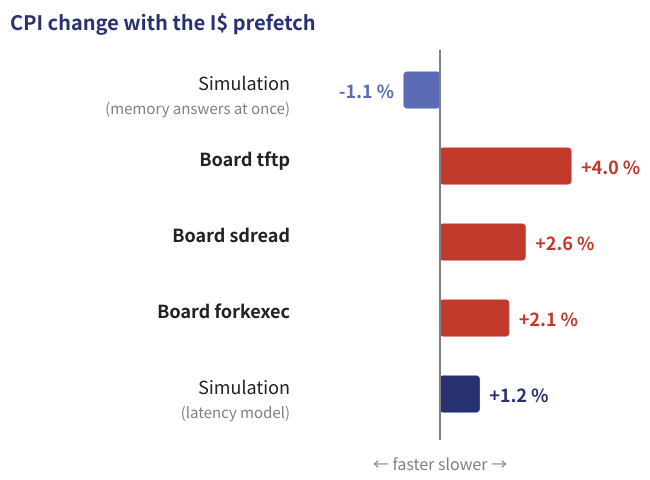
The prefetch was switched off, and from then on the rule was to measure before building. For example, letting the bus take a second read was found in advance to gain only 0.26 %, and was not built. The AI did not question the simulation's assumption (memory answers at once) and reported "faster". The board's numbers exposed the wrong assumption.
A wrong report (10-12)
Traps of the environment (09-21, 10-05)
The AI's mistakes show up as plausible summaries, and a rule of reading the raw logs prevents them. The traps of the environment lie on the human's side, and the AI can infer their causes from the records.
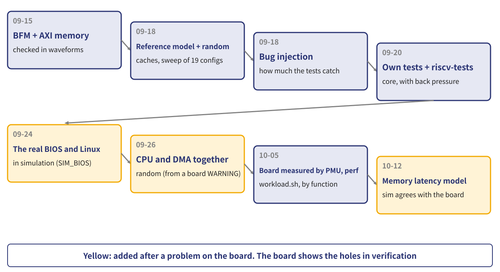
Each time the board stopped, a simulation that reproduced the problem was built first, and only then was the problem fixed. The board shows where the holes in verification are.
Table 5 Final verification results
| Environment | What it does | Result |
|---|---|---|
| SIM_CORE | 34 own tests (instructions, traps, MMU, PMP, debug, PMU and more), with back pressure | All PASS |
| riscv-tests | Official (rv64ui/um/ua/uc/uf/ud/uzba/uzbb/uzbs/uzbc/uzicond/mi/si) | p 178 / v 154 PASS |
| SIM_SYS | Core + real L1 / L2 + DMA, 27 own tests + riscv-tests | All PASS |
| SIM_CACHE | CPU and DMA at random at the same time, 21 sections, sweep of 19 configurations | 64,914 checks PASS |
| SIM_L2 / MMU / FPU | L2 about 1.5 million, PMP 200,000, FPU (against SoftFloat) about 1.3 million | PASS |
| SIM_BIOS | The real LiteX BIOS, Linux boot from an SD card model, perf | To the prompt |
| SIM_OCD | Co-simulation with OpenOCD (breakpoints, watchpoints) | PASS |
| Bug injection | CORE 339, CACHE 59, SYS 23, L2 31, MMU 21, FPU 62, DBG 15 | All 550 detected |
| Board | Linux boot, Ethernet, 120-minute stress test (memory, network and SD checked at once) | PASS |
The 4 failing riscv-tests require features not implemented (misaligned accesses in hardware, Zacas).
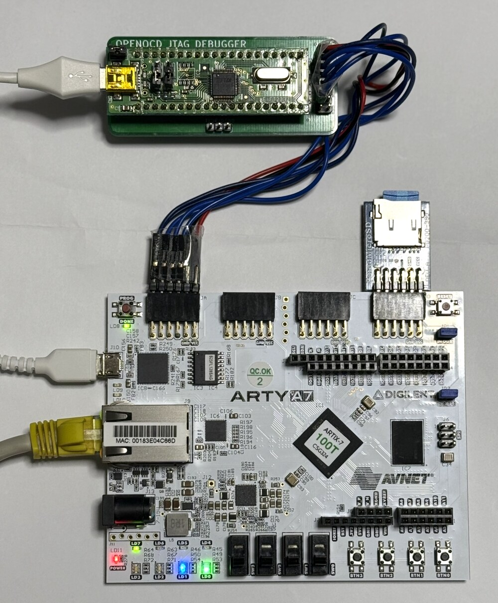
| Strengths (pros) | Weaknesses (cons) |
|---|---|
| Fast: Linux on a home-made CPU in 12 days, +91 % performance in 30 days | The board needs a human: Vivado, the board, the SD card, observation |
| Writes and maintains specification, RTL, verification and documents consistently (EN / JA) | Carries on plausibly from a wrong assumption ("faster" with an instantly answering memory) |
| Thorough verification: builds and runs reference models, random tests, sweeps and 550 bug injections itself | Can report wrongly (56 / 59 reported as 59 / 59) |
| Reads the board's numbers: finds causes and next steps from timing reports and the PMU | Weak against traps of the environment (shared-folder timestamps, macOS mounts) |
| Reads public specifications (PDF) and implements them | Long conversations get compacted: keeping documents and notes is a must |
| Keeps working through the night and leaves records | What to build and where to stop is decided by the human |
| Commits and pushes to GitHub on its own → the history is always kept |
Most of the weaknesses are covered by the human checking on the board and giving the AI the raw numbers.
Act like the technical manager of a real development team
Without checking every detail, interview the engineer in charge (Claude Code) about how it thinks and how it intends to check and verify its work, and confirm the quality of the design that way. Even without reading the RTL line by line, the quality becomes visible by asking how it was thought out and how it was checked.
The tag Rev.01 stays on main, and development continues on the dev branch. From the board's loads measured function by function, the next themes are:
A paper study (no design yet) of whether a dual-issue, out-of-order RV64GC core can run Linux on the same Arty A7-100T.
Outlook
What mmRISC-2 has shown
The plan: measure the breakdown of resources → measure NaxRiscv RV64 on the Arty → boot Linux on a 1-wide out-of-order core → go 2-wide → speculative loads and multiple outstanding misses → FPU and predictor. Verification keeps the reference models, bug injection and SIM_BIOS of mmRISC-2, and adds lock-step comparison with Spike at commit from the start. If it does not fit, the fallback is a dual-issue in-order core, or stopping at 1-wide out-of-order.
Munetomo Maruyama (professional name; legal name: Takanaga Yamazaki), from Sakyo-ku, Kyoto
Joined Hitachi, Ltd. in 1986 and worked on the development of SH microcontrollers. Since then, at Renesas Technology, a venture company and a major semiconductor maker, he has led the development of SoCs for image processing, various microcontrollers and related semiconductor devices, and he still designs microcontroller products today. He has been playing with microcomputers, FPGAs and GPUs since 1978, and has written magazine articles (about 100) and books on microcontrollers since 2000.
Selected magazine articles (in Japanese)
Books (in Japanese)
The figures in this paper are those of mmRISC-2 Rev.01 as of 2026-10-12. The text and figures of this paper were also written by Claude Code under the author's direction. A Japanese version is in Doc/20261015_WhitePaper_mmRISC-2_J.pdf.